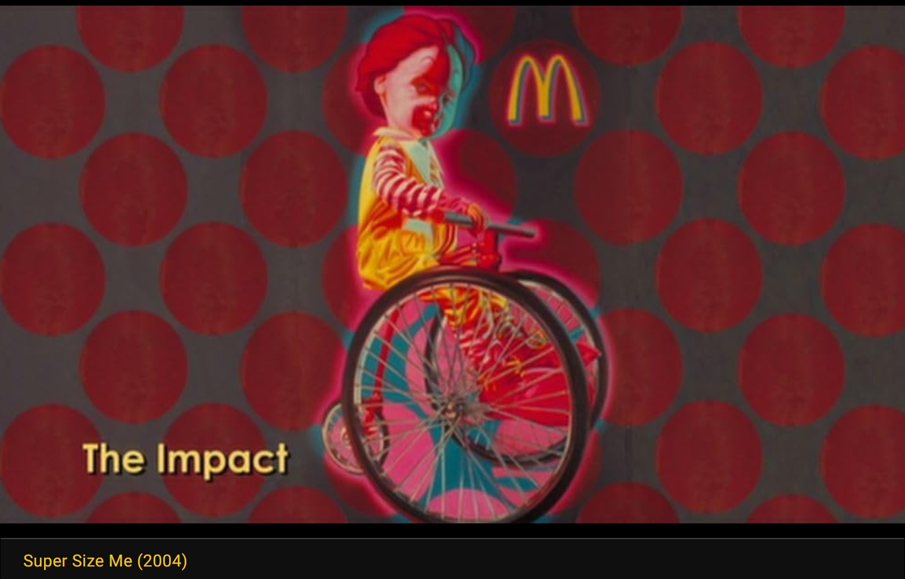

Exhibitions
Gods and Guerillas, Tin Man Alley, New Hope, Pennsylvania, US, August 3–September 30, 2002. Group exhibition; this work is documented on the exhibition showcard.


Literature
Ron English, Abject Expressionism: The Art of Ron English (San Francisco: Last Gasp, 2007), p. 28. ISBN 978-0867196894.

Ron English, Son of Pop: Ron English Paints His Progeny (San Francisco, California: 9mm Books and The Shooting Gallery, 2007), p. 87. ISBN 978-0-9766325-1-1.

Unframed - The New Geography, “Upper Playground and Hybrid Design”. Hybrid Design / Upper Playground, vol. 1, no. Issue 1, 2004.

Luca Ionescu, “Feature Artist: Ron English,” interview, Refill, no. 4, Build for You (Sydney, Australia: Keep Left Studio, 2004), pp. 50–57.
Блинцов, “Ron English поп-арт, клоунада и стёб”, Art Assorty, January 23, 2013.

“POPaganda, art and crimes!”, Chicquero, December 6, 2011.

, Kainowska, August 1, 2011.

“The Real America: Welcome to Hell, Kiss Kids!! ___The artwork of Ron English”, Kainowska, August 1, 2011. Online article.
Notes
This work appears in Morgan Spurlock’s documentary Super Size Me.
Ancillary Documentation


Provenance
Private collection.